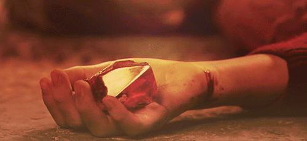
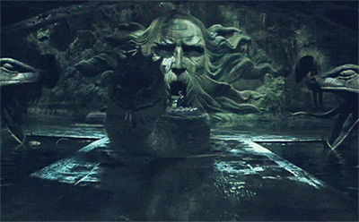
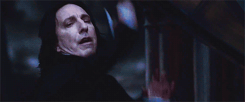

Hogwarts School of Witchcraft and Wizardry
History of Hogwarts
Hogwarts was founded by two wizards and two witches around 990 A.D. Their names were Godric Gryffindor, Helga Hufflepuff, Rowena Ravenclaw, and Salazar Slytherin. Each of the founders represent aspects of the personality they wanted to bring out in the students of Hogwarts. Gryffindor represents bravery, Hufflepuff represents kindness, Ravenclaw represents wisdom, and Slytherin represents ambition. Hogwarts is separated into four houses, each named after a founder, and each house has its own common room, dormitories, and Head of House.
Hogwarts; A Timeline
- 1991 – 1992 school year — Philosopher's Stone is discovered.
- 1992 – 1993 school year — Chamber of Secrets is opened.
- 1993 – 1994 school year — Sirius Black escapes from Azkaban.
- 1994 – 1995 school year — The Triwizard Tournament takes place.
- 1995 – 1996 school year — The Ministry of Magic interferes with Hogwarts.
- 1996 – 1997 school year — Voldemort gains indirect control over Hogwarts, Headmaster Albus Dumbledore is killed.
- 1997 – 1998 school year — The Battle of Hogwarts takes place.

The Philosopher's Stone

The Chamber of Secrets

The death of Albus Dumbledore.